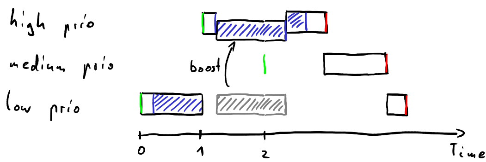
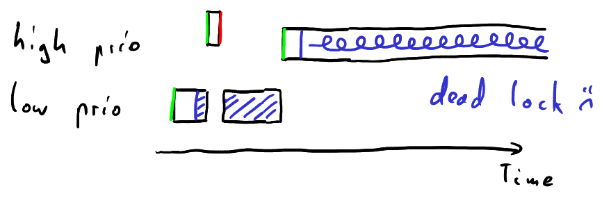
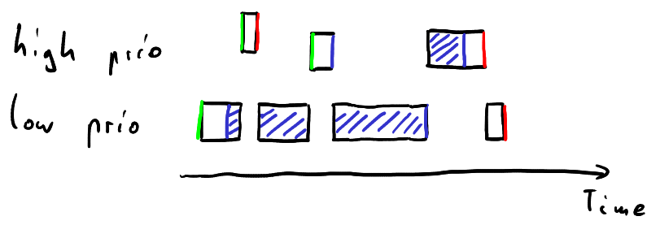
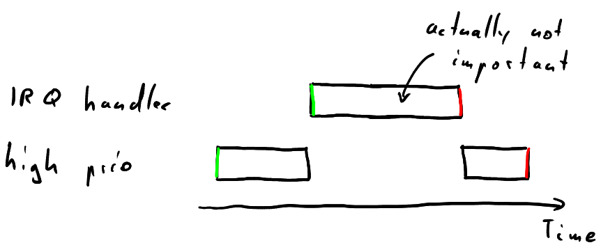
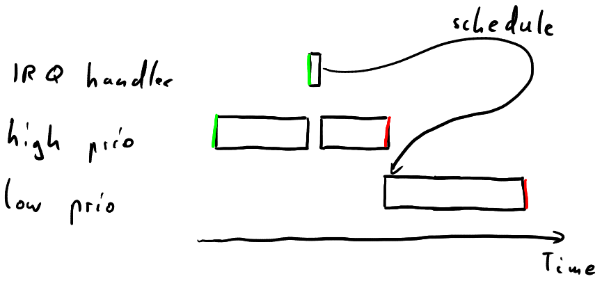

Real-Time on Linux
Christopher Besch •
30th June 2024
Real-Time on Linux
What's Real-Time?
Nancy Grace Roman Space Telescope's
ACS (Attitude Control System)
- Correct output
- Within deadline

So Real-Time means really fast...right?
fast != deterministic
- Classic Linux goal:
through-put, efficiency - Real-Time OS:
deterministically bounded worst case latency
Let's Build a Spaceprobe!
- Requirements:
- ACS: Real-Time
- Marketing wants AI: LLM needs throughput
- Options:
- Multiple Computers:
one GPOS, one Real-Time OS - Linux with
PREEMPT_RT - ...
- Multiple Computers:
User-Space: Real-Time POSIX
Default: SCHED_OTHER
Output: SCHED_OTHER
- Waste time on "low" prio task
Real-Time: SCHED_FIFO/SCHED_RR
Requires root or high enough rtprio in limits.conf
Output: SCHED_FIFO/SCHED_RR
- Focus on high prio task
- Danger: lock up CPU with high prio task
- Consider RT throttling
Priority Inversion
Output: Priority Inversion
- Medium prio task could run very long
- E.g., Mars Pathfinder
Priority Inheritance
Output: Priority Inheritance

Kernel-Space: PREEMPT_RT
Scheduler Preemption Model
CONFIG_PREEMPT_NONE- No preemption in kernel (except entering userspace)
CONFIG_PREEMPT_VOLUNTARYmight_sleepin kernel
CONFIG_PREEMPT- kernel preemptible unless preemption disabled
CONFIG_PREEMPT_RT- fully preemptible unless in
raw_spinlock_tor IRQ
- fully preemptible unless in
Scheduler Preemption Model
Kernel Config
raw_spinlock_t
Why disable preemption?
raw_spinlock_t

raw_spinlock_t without preempt_disable
PREEMPT_RT Solution

rt_mutex
- Higher overhead: many context switches
When spinlock_t doesn't spin
Interrupts Request Handler (IRQ)
Threaded IRQ
- No preemption in NMI, hardirq, softirq context
- Threaded IRQ have RT prio 50 by default
Hardware Considerations
- Simultaneous multithreading (SMT)
- Dynamic frequency scaling
- System management interrupts (SMI)
- Much more...
e.g., ARM Cortex-R
What we've Covered
- Linux Advantage
- User-Space:
SCHED_FIFO/SCHED_RRPTHREAD_PRIO_INHERIT
- Kernel-Space:
PREEMPT_RTrt_mutexinstead ofraw_spinlock_t- Threaded irq handlers
What we've Left Out
- User-Space Memory handling
- Benchmarking: e.g., Cyclictest
- Linux Limitations: mainly provability
- Linux/PREEMPT_RT alternatives
e.g., VxWorks